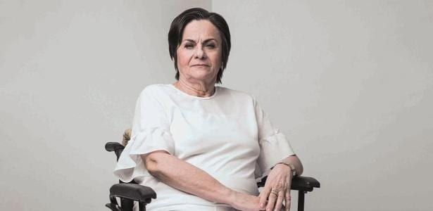

A mulher por trás da Lei

Maria da Penha Maia Fernandes (Fortaleza, Ceará, 1945) é uma farmacêutica brasileira que lutou para que seu agressor viesse a ser condenado. E hoje é líder de movimentos de defesa dos direitos das mulheres, vítima emblemática da violência doméstica. É fundadora do Instituto Maria da Penha, uma ONG sem fins lucrativos que luta contra a violência doméstica contra a mulher.
“A vida começa quando a violência acaba”
Sua história
Em 1983, seu marido, o professor colombiano Marco Antonio Heredia Viveros, tentou matá-la duas vezes. Na primeira vez atirou simulando um assalto, na segunda tentou eletrocutá-la enquanto ela tomava banho. Por conta das agressões sofridas, Penha ficou paraplégica. Dezenove anos depois, seu agressor foi condenado somente no mês de outubro de 2002, quando faltavam apenas seis meses para a prescrição do crime. Heredia foi preso e cumpriu apenas dois anos (um terço) da pena a que fora condenado. O episódio chegou à Comissão Interamericana dos Direitos Humanos da Organização dos Estados Americanos (OEA) e foi considerado, pela primeira vez na história, um crime de violência doméstica.
